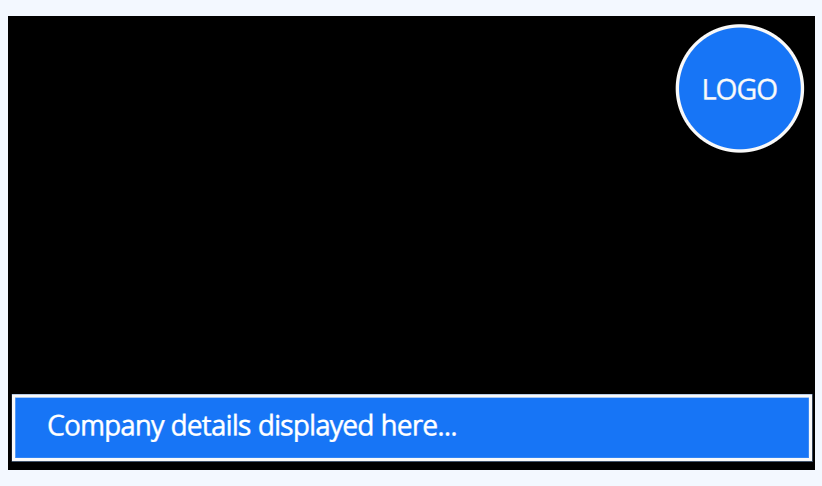

Overlay Layouts
Create an Overlay Layout which when Scheduled will show on top of other Layouts in that schedule.
Overlay Layouts can also be Scheduled to be used with Layouts inside a Layout List Campaign.
Overlay Layouts remain on top while your normal scheduled content changes underneath. This is particularly useful for logos, important information or emergency notices for example.

Create an Overlay Layout
Overlay Layouts are created in exactly the same way as all other Layouts. Add content to fit around your existing designs so that your Overlay Layout can “sit on top” of other Layouts that are Scheduled at the same time as the Overlay. Your Overlay Layout will display its all important content whilst the Layouts “underneath” play in rotation.
BI Square Brand Activation will not render the background on Players when a Layout is scheduled as an Overlay Layout.
Overlay Layouts behave in a different way to Layouts when scheduled and will only render media content once so will not show any refreshed content.
If your Overlay Layout includes content which needs to be refreshed, Calendar or Ticker Widgets for example, a Playlist should be added to the Layout and the media added to the Playlist. Then when it loads the next item in the Playlist it will reload the other items to show refreshed content.